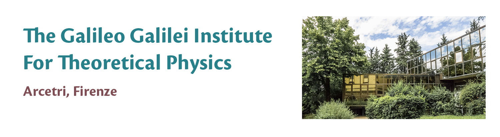

SFT - Lectures on Statistical Field Theories
GGI postgraduate school
Practical info
- Accommodation:
if you need help in finding an accommodation during your stay at GGI, please contact
GGI Housing Office
- Eating in Florence:
An informal list of eating places in Florence
My restaurant experiences in Florence
, by Tony Guttmann
- Transportation:
How to reach GGI
Bussino
, a small bus, n. 38A, connecting Porta Romana and GGI; tickets available at newspaper kiosks and tobacconists
Ataf
(public transport company in Florence area)
-
Further info about Florence
-
Opera di Firenze